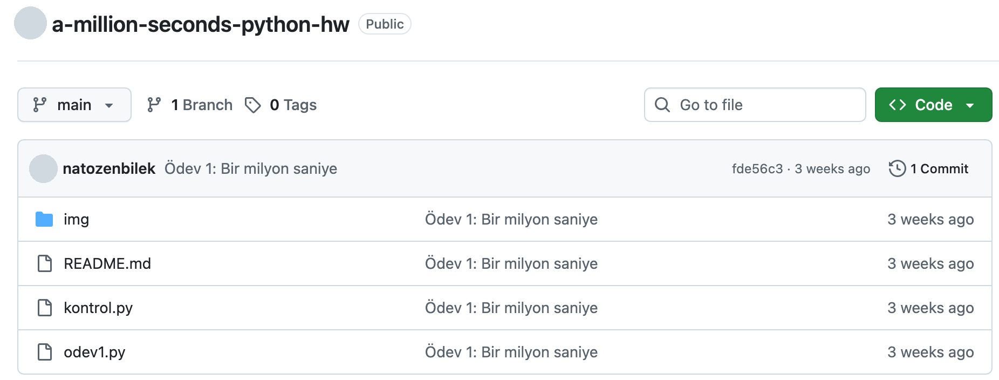
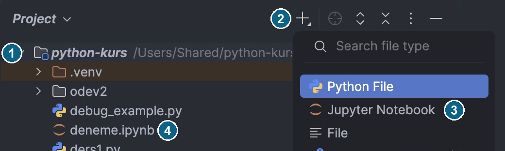
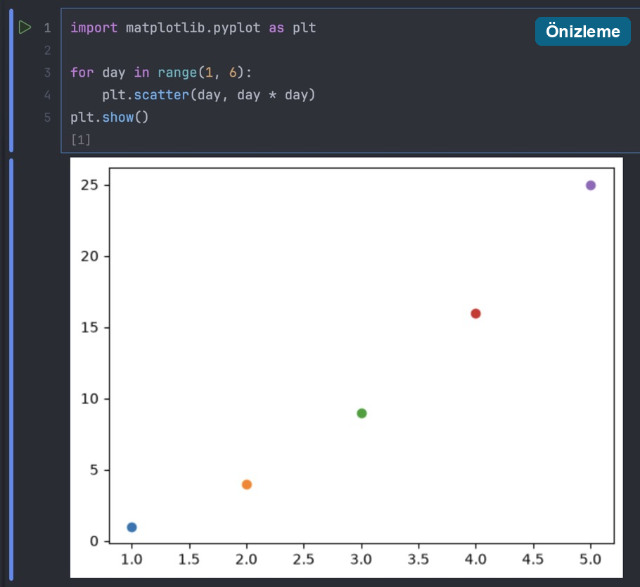

Ders 4: import, function, scope ve class
10 Kasım 2026, Salı, 18.00, E4
Nezih Arhan Tözenbilek
Hacettepe University, Department of Computer Engineering
IEEE Hacettepe University Student Branch, Güz 2026
| 4A: kendi function'larınız | 4B: scope, kendi type'ınız ve file |
|---|---|
import: hazır module'ler | scope: function'ın kendi isimleri |
def, call ve parameter | class ve object |
return ve return value | __init__, self ve attribute |
None, print ve return | class içinde method |
| notebook, GitHub | with open(): file okuma ve file'a yazma |
Bu hafta bu iki şeyi öğreneceksiniz.
Aklınızda kalsın: değer function'a parameter ile girer, return ile çıkar.
loop, break, continue, try ve assert
t = 0
i = 1
while i <= 3:
t += i
i += 1
print(t)
631
3
610t, 1 + 2 + 3'ü toplar; print loop'tan sonra, bir kez çalışır.
for i in range(1, 4):
total = 0
total += i
print(total)
630total = 0 loop'un içinde: her tur sıfırlanır, yalnız son turun 3'ü kalır.
count = 0
for i in range(3):
for j in range(2):
count += 1
print(count)
5362Dıştaki loop 3 tur döner, her turunda içteki 2 tur: 3 × 2 = 6.
for n in range(1, 6):
if n == 3:
continue
if n == 5:
break
print(n)
1
21
2
41
2
4
51
2
3
4continue yalnız 3'ün turunu atlar; break 5'te loop'u bitirir.
try:
number = int("üç")
print("a")
except ValueError:
print("b")
print("c")
a
b
cba
cb
cHata çıkınca try'ın kalanı atlanır, except çalışır, program devam eder.
score = 120
assert score <= 100, "Puan çok büyük."
print("geçti")
geçtiFalse
geçtiŞart False: assert programı durdurur.
Bu yarıda kendi function'ınızı yazıp ondan değer almayı öğreneceksiniz.
import math, import random, import thisdef, say_hello("Yusuf"), passreturn, iç içe callNone, is None, print ve returnShift+Enter, repositoryPython'un hazır araç kutuları
import math
print(math.pi)
3.141592653589793
import math, math module'ünü programa getirir.
print(math.sqrt(16))
import yazılmazsa math ismi yoktur; Python bunu error message'ta söyler.
Traceback (most recent call last): File "…/python-kurs/example.py", line 1, in <module> print(math.sqrt(16)) ^^^^NameError: name 'math' is not defined. Did you forget to import 'math'?
random.randint(1, 6) tavla zarı gibidir: 6 da gelir, yoksa düşeş hiç olmazdı.
import math
import numpy
Traceback (most recent call last): File "…/python-kurs/example.py", line 2, in <module> import numpyModuleNotFoundError: No module named 'numpy'
Kurulu olmayan bir module import edilemez.
import math
x = math.sqrt(16)
print(x + 1)
5.0517.0sqrt bir float verir: 4.0 + 1, 5.0 olur.
Kendi function'ımızı yazmak
Kantinde "bir tost" demek yeter; tostun nasıl yapıldığını her seferinde anlatmazsınız.
Argument'lar optik form gibi sırayla okunur; kaydırırsanız her cevap yanlış soruya gider.
Aynı function, farklı argument'larla üçgen, kare ve altıgen çizer.
import turtle
def polygon(sides, size, color):
turtle.pencolor(color)
for i in range(sides):
turtle.forward(size)
turtle.left(360 / sides)
polygon(3, 100, "red")
polygon(4, 100, "blue")
polygon(6, 100, "green")
turtle.done()
polygon() 36 kez çağrılınca bu çiçek ortaya çıkar.
for i in range(36):
if i % 2 == 0:
polygon(6, 100, "red")
else:
polygon(6, 100, "blue")
turtle.left(10)
def print_credits(code, credits):
print(code, credits)
print("başla")
print_credits("MAT123", 4)
başla
MAT123 4MAT123 4
başlabaşlacode credits
başladef yalnızca tanımlar; gövdeyi call'lar çalıştırır.
Function'dan bir değer geri almak
Return value, otomatın tepsiye düşürdüğü ürün gibidir: call'un yerini o alır.
def has_passed(gp):
return gp >= 1.75
if has_passed(2.5):
print("geçti")
geçti
bool döndüren bir call, if'in şartı olabilir.
def twice(n):
return n * 2
def plus_one(n):
return n + 1
print(twice(plus_one(3)))
print(plus_one(twice(3)))
8 7
İç içe call'da önce içteki çalışır; dönen değer dıştakinin argument'ı olur.
def twice(n):
return n * 2
def plus_one(n):
return n + 1
x = plus_one(twice(5))
print(x, twice(x))
11 2212 2410 20Önce içteki: twice(5) 10, plus_one(10) 11; twice(11) 22.
def grade_point(score):
if score >= 50:
return 2.5
else:
return 0.0
def course_points(credits, score):
return credits * grade_point(score)
print(course_points(4, 66))
10.0
Bir function başka bir function'ı çağırabilir; dönen değer onun hesabına girer.
def ask_int(prompt):
while True:
try:
number = int(input(prompt))
return number
except ValueError:
print("Tam sayı girin.")
credits = ask_int("Kredi: ")
print(credits * 2)
Kredi: üç Tam sayı girin. Kredi: 3 6
Sayı gelince return hem loop'u hem function'ı bitirir.
return 5
File "…/python-kurs/example.py", line 1 return 5 ^^^^^^^^SyntaxError: 'return' outside function
return yalnızca bir function'ın gövdesinde yazılabilir.
def f():
return 1
print("A")
print(f())
1
AA
11Areturn 1 function'ı bitirir; print("A") hiç çalışmaz.
Bilinmeyen değer; print ile return'ün farkı
Haaland'ın piyasa değerini bilmiyoruz: market_value'ya ne yazalım?
None ertelenen maçın skoru gibidir; 0-0 ise oynanmış bir maçın skorudur.
Numbers(sayılar)
Integral
int7boolTrueReal
float3.5Sequences(diziler)
Immutable
str"7"rangerange(3)tupleDers 5Mutable
listDers 5Set types(kümeler)
setDers 5Mappings
dictDers 5None
NoneTypeNone
market_value = None
print(market_value is None)
print(market_value == 0)
True False
None'ı is None ile kontrol ederiz.
market_value = None
if market_value is None:
print("Değeri bilinmiyor")
Değeri bilinmiyor
Bilinmeyen değer, hesaba girmeden önce if ile ayrılır.
market_value = None
print(150 + market_value)
Traceback (most recent call last): File "…/python-kurs/example.py", line 2, in <module> print(150 + market_value) ~~~~^~~~~~~~~~~~~~TypeError: unsupported operand type(s) for +: 'int' and 'NoneType'
None ile hesap yapılamaz.
def greet():
print("Afiyet olsun")
s = greet()
print(s)
Afiyet olsun None
return yazılmayan her function None döndürür.
return'süz function, "Afiyet olsun" yazıp ürün düşürmeyen otomat gibidir: elde None kalır.
def calc(x):
print(x * x)
result = calc(4)
print(result)
16
None16
16Nonecalc 16'yı yazdırır ama bir şey döndürmez; result None'ı gösterir.
Project assignment'ı (proje ödevi) notebook'ta yapacaksınız; isterseniz GitHub'da gösterirsiniz.

Ödevleri indirdiğiniz sayfa bir repository, yani projenin dosyalarının durduğu yer.

Yeni notebook, + düğmesinden açılır.

matplotlib'in çizdiği grafik, cell'in hemen altında görünür.
matplotlib Python'la gelmez, ayrıca kurulur.
51020Notebook, cell'leri çalıştırıldıkları sırayla hatırlar; orta cell iki kez çalıştı, x 20 oldu.
Sırada 4B
def calc(x):
return x * x
result = calc(4)
print(result)
16
None16Nonecalc 16'yı return eder; ekrana yalnızca son satırdaki print yazar.
Bu yarıda isimlerin nerede yaşadığını görüp kendi type'ınızı, bir class'ı yazacak, sonra file okuyup yazacaksınız.
NameError, Step Intoclass Course:, Course(), type()__init__, self.code = codedef points(self):, d.points()with open(), write(), "a"Function'ın kendi isimleri ve yaşadıkları yer.
Local variable sınavdaki müsvedde kağıdı gibidir: call bitince toplanır, dışarı çıkmaz.
def solve():
local = 5
solve()
print(local)
Function'da oluşan isim dışarıda yoktur; değeri dışarı return ile çıkar.
Traceback (most recent call last): File "…/python-kurs/example.py", line 5, in <module> print(local) ^^^^^NameError: name 'local' is not defined. Did you mean: 'locals'?
F7 (Step Into) call'un içine girer; Frames listesi açık frame'leri gösterir.
def f(x):
x = x + 1
return x
x = 5
y = f(x)
print(x, y)
6 65 5NameError5 6Parameter x, call'un içinde ayrı bir isimdir; dönen 6 y'ye bağlanır.
Kendi type'ımızı yazmak.
class kurabiye kalıbı gibidir: kalıp bir, ondan çıkan her kurabiye bir object.
print(type(5), type("MAT123"), type(3.08))
<class 'int'> <class 'str'> <class 'float'>
Ders 1'den beri her value bir class'ın object'iydi.
class Course:
pass
a = Course()
b = Course()
print(a is b, type(a) == type(b))
False TrueTrue TrueFalse FalseTypeErrorİki çağrı iki ayrı object yapar; ikisinin type'ı da Course'tur.
Her object'e kendi bilgilerini vermek.
class <İsim>: def __init__(self, <parametreler>): self.<attribute> = <parametre>
class Course:
def __init__(self, code, credits, score):
print("__init__ çalıştı:", code)
self.code = code
self.credits = credits
self.score = score
d = Course("MAT123", 4, 66)
print(d.code)
Course(...) call'u __init__'i kendisi çalıştırır.
__init__ çalıştı: MAT123
MAT123
self, dilekçedeki "ben" gibidir: dilekçeyi kim verirse "ben" odur.
class Greeting:
def __init__(self, name):
self.name = name
g = Greeting("millet")
print(g.name, type(g))
millet <class '__main__.Greeting'>
Ders 1'deki Selam artık kendi class'ında.
class Course:
def __init__(self, credits):
self.credits = credits
a = Course(4)
b = Course(3)
print(a.credits, b.credits)
3 34 4TypeError4 3Her object kendi credits'ini tutar; self'i çağıran yazmaz, Python verir.
Object'e iş yaptırmak.
self = g
class Greeting:
def __init__(self, name):
self.name = name
def say(self):
print("Selam", self.name)
g = Greeting("millet")
h = Greeting("Zehra")
g.say()
h.say()
Selam millet
Selam Zehra
Aynı method, her object'te o object'in name'ini kullanır.
class PiggyBank:
def __init__(self):
self.money = 0
def deposit(self, amount):
self.money += amount
k = PiggyBank()
print(k.deposit(100), k.money)
100 100None 0None 100deposit object'i değiştirir ama return etmez: call'un yeri None, money 100.
class Course:
def __init__(self, credits):
self.credits = credits
def points(self, gp):
return self.credits * gp
print(Course(3).points(2.5))
5.5TypeError7.5NonePython self'e yeni object'i verir, gp 2.5 olur; 3 * 2.5 = 7.5.
Program bittikten sonra da kalan veri
Şimdilik grades.txt, .py dosyasıyla aynı klasörde durmalı.
with open(<dosya adı>, encoding="utf-8") as <isim>: <dosyayla çalışan satırlar>
with open("grades.txt", encoding="utf-8") as f:
for line in f:
print(line)
for, dosyanın satırlarını sırayla verir.
open(<dosya adı>, encoding="utf-8")
with open("missing.txt", encoding="utf-8") as f:
for line in f:
print(line)
Traceback (most recent call last): File "…/python-kurs/example.py", line 1, in <module>2 with open("missing.txt", encoding="utf-8") as f: ~~~~^^^^^^^^^^^^^^^^^^^^^^^^^^^^^^^^^3FileNotFoundError: [Errno 2] No such file or directory: 'missing.txt'1
Dosya yoksa ya da başka klasördeyse bu hata gelir.
Memory'deki sonucu diskteki bir file'a kaydetmek.
Yazılan file, .py dosyasıyla aynı klasörde görünür.
with open("test.txt", "w",
encoding="utf-8") as f:
f.write("bir")
print("iki")
f.write("üç\n")
birikiüçbir
iki
üçikiEkrana yalnızca print yazar; iki write test.txt'ye gider.
Ödev 4, odev4.py dosyasıdır: TODO'ları doldurup aynı dosyayı formdan yüklersiniz.
İsteğe bağlı; bağlantılar Ek kaynaklar sayfasında.
Değer function'a parameter ile girer, return ile çıkar.